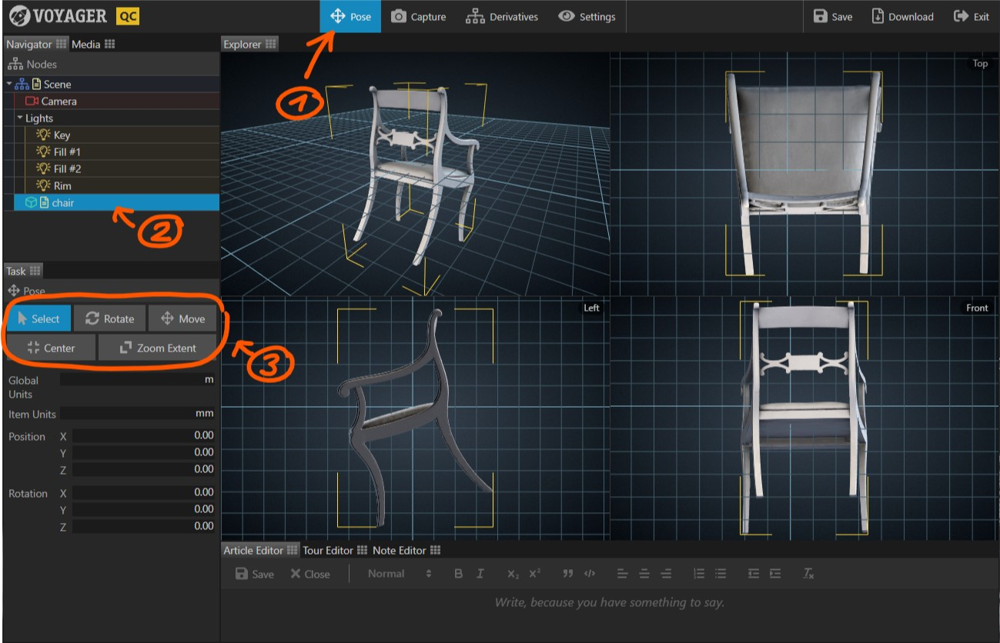

Often, after digitizing an object, the resulting 3D model is arbitrarily positioned in space. The Pose Task provides tools to bring a model into its initial, upright position.
The Pose Task is only available if Voyager Story is started in QC mode.
- Select the Task in the task bar. The viewer now displays a quad view with a perspective view in the top left quadrant, and an orthographic top, left, and front view in the three other quadrants.
- Click on the model you want to position. A yellow selection marker appears around the model.
- Select one of the pose tools and start positioning.

Position the model
- Drag with the left mouse button in one of the orthographic views to rotate the model.
- Drag with the left mouse button in one of the orthographic views to move the model.
- Click the button to position the model on the origin.
While dragging with the left mouse button, you can press the key to move 10 times faster and the key to move 10 times slower.
Adjust the view
- Right click and drag in any view to pan the view
- Use the scroll wheel in any view to zoom the view
- Click to show the full model in all four views.
Set model and global units
- Choose which units to use globally by adjusting the Global Units parameter.
- Choose the units of the selected model by adjusting the Item Units parameter.